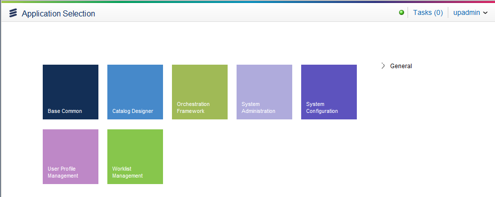

Start RuntimeAfter you have configured your catalog parameters in the System Configuration application, upgraded the database and changed the node, and assigned the privileges, you can run the Catalog application.
 Note: The Catalog application is only visible if you are running a Catalog server node. Refer to Configuration - Catalog Parameters document and Velocity Studio Configuration for details on creating the node and assigning it in Velocity Studio. The server node created in the System Configuration application must match the Node field in the Velocity Studio's Select Application option. |